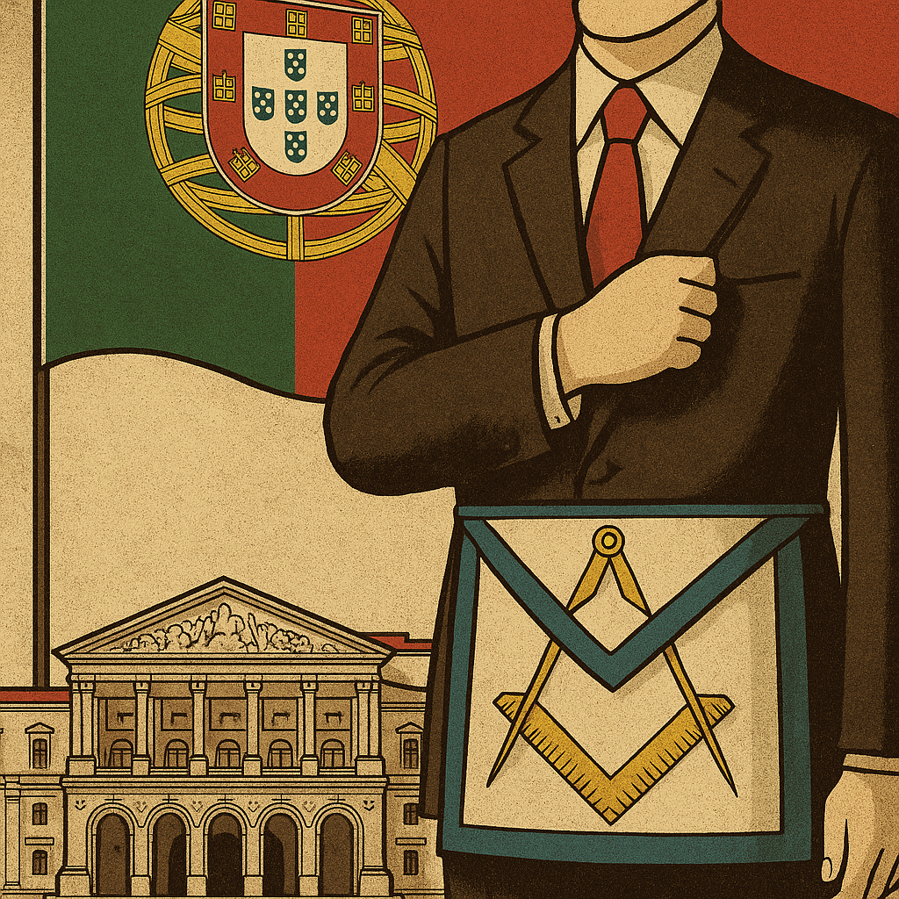

Publicado em 2025-04-24 11:43:41
Por Francisco Gonçalves – fragmentoscaos.eu
Em plena democracia do século XXI, há uma organização que opera nas sombras, entre juras de silêncio, apertos de mão codificados e rituais de iniciação. Uma organização que afirma servir a liberdade e a humanidade — mas que age como uma teia de influência, manipulação e controlo.
Chama-se maçonaria. E está em todo o lado onde há poder — mas nunca onde há escrutínio.
Durante a ditadura de Salazar, era proibida, perseguida, clandestina. Após o 25 de Abril, emergiu como “vítima” do regime anterior. Foi aceite, legalizada, normalizada.
Mas em vez de se diluir no espírito democrático, fortaleceu-se como um sistema dentro do sistema.
Hoje, a maçonaria é um dos segredos mais abertos da república portuguesa.
São as portas giratórias da mediocridade.
Basta ser “irmão” para subir. Basta estar “dentro” para ser promovido. A competência? Irrelevante. A ética? Adaptável. O mérito? Decorativo.
Falam de liberdade, mas atuam como clube fechado.
Falam de igualdade, mas vivem da hierarquia e da influência discreta.
Falam de fraternidade, mas só entre os seus. O resto do povo é paisagem.
E não nos iludamos: isto não é teoria da conspiração. É realidade constatável.
Quantos escândalos, quantas nomeações obscuras, quantas promoções absurdas — com a assinatura invisível da maçonaria?
Como pode haver democracia autêntica, quando existe uma rede paralela de poder que escapa a eleições, a fiscalização e à transparência?
A maçonaria, tal como atua em Portugal, não é um espaço filosófico — é uma agência de recrutamento para a elite do compadrio.
É uma espécie de empresa de influências com branding esotérico.
Esta crónica não é contra a liberdade de associação. É contra a usurpação da democracia.
Não é contra rituais ou símbolos. É contra o abuso de poder feito nas sombras, por quem se diz defensor da luz.
Enquanto houver repúblicas dominadas por aventais, o povo será sempre servo de um teatro onde nunca é convidado a entrar.
E nós, os que escrevemos, não vestimos aventais — vestimos palavras.